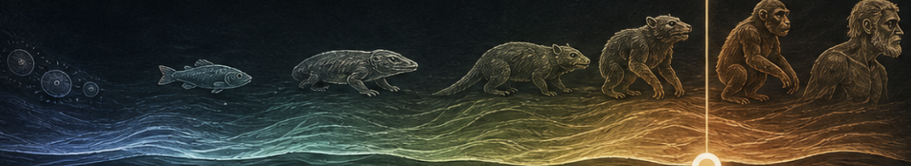

Достающее звено
От кого произошли обезьяны?
Все слышали про человека и обезьян. Но откуда взялись сами обезьяны? Ведите шкалу от древних клеток к приматам и человеку.
Короткий ответ
Обезьяны произошли от ранних древесных приматов.
Ниже не лестница к человеку, а древо: млекопитающие → синапсиды → четвероногие → рыбы → хордовые → клеточные линии.
Перемещайте ползунок по шкале или нажимайте на эпохи

Как читать шкалу
Шкала — это путешествие во времени от древнейших форм жизни к человеку.
Перемещайте ползунок или кликайте по эпохам, чтобы узнать больше.
Каждая точка — это не шаг к нам, а ветвь на древе жизни.